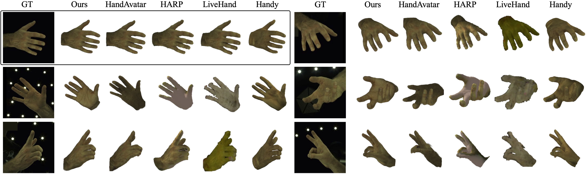
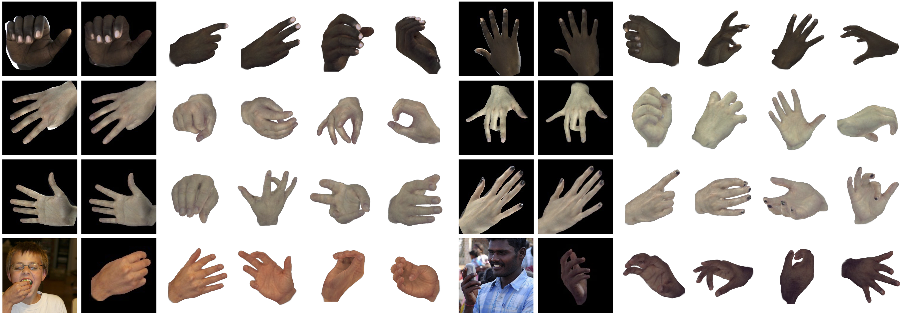
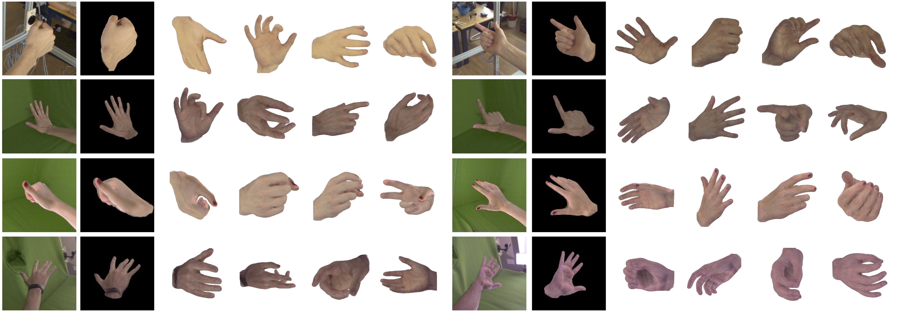
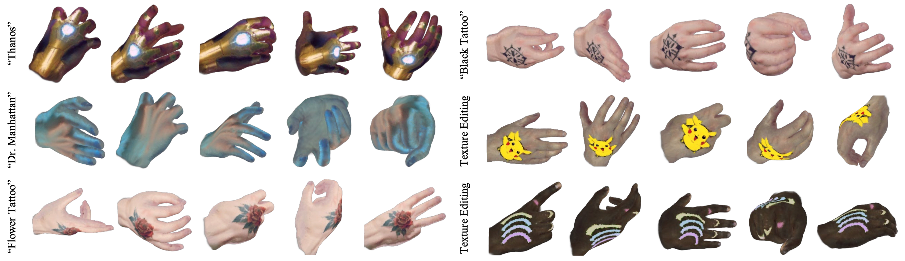

Results
Qualitative comparison on InterHand2.6M

In-the-wild results from real-captured images and MSCOCO

Qualitative results on HanCo

Qualitative results on Onehand10K

Applications
Text-to-avatar & Texture Editing
